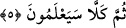

4. Hayır! Anlayacaklar!
Bu
ifâde,
“kellâ/hayır”
edâtından
anlaşılacağı
üzere
bir
“reddetme”;
“seya’lemûn/bilecekler” ifâdesinden anlaşılacağı üzere de bir tehdiddir. Buna göre
âyet-i kerîmenin mânâsı şöyledir: Öldükten sonra dirilme konusu, inkâra veya
soruşturmaya tâbi tutulabilecek biçimde hakkında şüphe duyulacak bir mesele değildir.
Onlar, soruşturdukları bu şeyin gerçek olduğunu, buna kimsenin engel olamayacağını,
bir gün mutlaka meydana geleceğini, bunda hiç kuşku olmadığını, kesin olarak
gerçekleşeceğini ve yine bunda asla kuşku olmadığını anlayacaklar.
5. Yine hayır! Onlar anlayacaklar!
Bu ifâde, bir önceki âyette geçen red ve tehdidi anlatmada abartı ve mubalağa olsun
diye tekrarlanmaktadır. Böylece vurgulamada ve şiddet algısında bir pekiştirme
sağlanmış olmaktadır.
Âyetin başındaki “sümme/sonra” edâtı, ikinci tehdîdin daha ağır ve şiddetli olduğunu
göstermek için getirilmiştir. Bir başka ifâdeyle söylemek gerekirse “sümme” ifâdesi,
aslında zaman açısından sonralık ifâde etsin diye kullanılır. Bu kelime bazen -mecâzen-
rütbe açısından sonralık anlamında da kullanılabilir. Dolayısıyla “sümme” burada
birbirine atfedilen iki gerçeğin şiddet ve fecâatte birbirinden çok farklı olduklarını
vurgulamak için getirilmiş olur. Bu vurgu ise rütbe açısından uzaklığın, zaman açısından
sonralığa benzetilmesiyle elde edilmiştir. Çünkü her iki öncelik ve sonralık, iki mesele
arasında mutlak uzaklık açısından aynıdır. Şu halde burada “sümme” kelimesinin gerçek
değil de mecâzî anlamı kasdedilmiş olmaktadır. Çünkü ifâdenin akışı içinde tam da
burası, bir şiddet vurgusu ve tehdid yeridir. Kelimeyi bu şekilde yorumlamak, daha bir
vurgu ve pekiştirme sağlar.
Bâzı âlimler “sümme” kelimesini gerçek mânâsında yorumlamışlar ve: “Onlar verilen
haberin gerçek olduğunu can verirken anlayacaklar; bir de daha sonra kıyâmet günü
anlayacaklar” şeklinde yorumlamışlardır. Kuşkusuz kıyâmet günü, zaman açısından,
kişinin can verdiği zamandan daha sonra gerçekleşecektir. Böylece “sümme” zaman
açısından bir öncelik ve sonralık ifâde etmiş ve gerçek anlamında kullanılmış
olmaktadır. Âyet-i kerîmeyi şöyle yorumlamak da mümkündür: Onlar öldükten sonra
dirilmenin gerçek olduğunu, kabirlerinden kalkıp dirildiklerinde anlayacaklar. Sonra da
amellerine uygun olarak karşılık alacaklarının gerçek olduğunu bilecekler ve
anlayacaklar.
“Ayrılığa düştükleri” ifâdesini açıklarken kâfirlerin bâzılarının, öldükten sonra